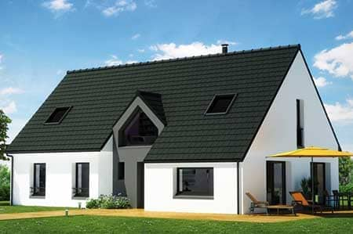

Nous prennons à coeur la conception de votre site web depuis plus de 10 ans.
Nos webdesigners à la pointe de la technologie
Que vous ayez un site web qui a besoin d'un rafraîchissement ou que vous partiez de zéro, laissez nos webdesigners vous réaliser un design dont vous serez fier.
Développer son portefeuille clients
L'objectif principal pour votre entreprise est d'augmenter son chiffre d'affaire. Nos experts en référencement SEO vous accompagnerons pour qu'elle puisse se faire connaître sur Internet.
Les meilleurs graphistes de Lyon
Un bon design n'est rien sans de bonnes illustrations. Laissez faire notre équipe de graphistes talentueux pour donner à vos pages une touche finale d'élégance.
Nos experts en webdesign aident les agences situées à Lyon et ses alentours à se développer et à se faire connaître sur Internet. Nous travaillons pour aider chaque entreprise locale à développer son portefeuille client .
En savoir plus
Vous êtes à la recherche d'une agence maîtrisant la création de sites Internet à Lyon et sa région ? Que vous ayez besoin d’une identité visuelle complète ou d’une refonte de votre site, n’hésitez pas à nous contacter. Nos graphistes et webdesigners expérimentés travailleront avec vous pour créer un site web fonctionnel qui vous correspond, afin que votre entreprise puisse se faire connaître sur Internet et augmenter son chiffre d'affaire.
Refonte d'un site web pour un journal local
Nos graphistes ont crée une nouvelle identité visuelle pour un journal basé à Lyon.
Création d'un site web pour photographes
Nous avons conçu la plateforme idéale pour laisser place aux clichés des photographes.
Création d'un site internet pour un voyageur
Nos webdesigners ont conçus un site internet et des illustrations pour sublimer les vidéos et les articles de ce voyageur.
Conception d'un site web pour une agence de mariage
Nous avons travaillé avec cette agence pour créer un site internet permettant la présentation détaillée de leurs prestations.
Prêt pour redonner vie à votre projet ?
Contactez notre équipe !
Profitez de notre réseau. Grâce à nos partenaires reconnus, la conception de votre site vous aidera à vous faire connaître sur Internet et à gagner en notoriété.
transakAuto
Transak accompagne les particuliers et les professionels sur l'achat ou la revente de véhicule.
HAPE
Depuis son ouverture en 2017, ce restaurant est en partenarait avec des producteurs locaux pour vous fournir des pizzas de qualité.
technitoit
Ces artisans prennent à coeur de rénover votre habitation tout en respectant l'environnement.

Entrevue immobilière
Située en plein coeur de Lyon, son équipe gage d'une expertise incontestable sur le marché de l'imobilier sur l'achat et la location.
Ils parlent de nous sur leur site, bientôt ils parleront de vous ! Faîtes confiance à nos experts en référencement SEO pour vous démarquer de vos concurrents et vous faire entendre sur le web.
- 123site.com: Seuls des sites certifiés et approuvés par ses webmaster ont le privilège d'y être affichés.
- backlink.com:Acteur incontournable dans les annuaires de référencement.
- annuairemarketing.com: Depuis 10 ans, cet annuaire professionel recense les entreprises sur l'ensemble du territoire français. Il compte à son actif plus de 800 partenaires.